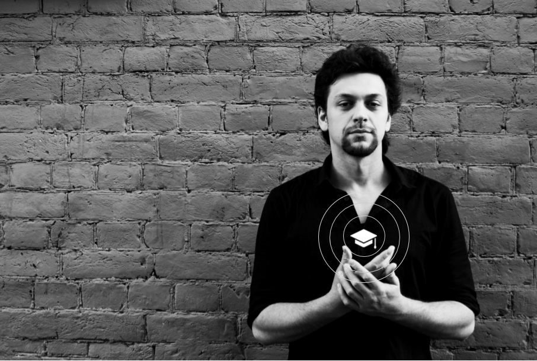

Глеб Кушедов – EdTech Unicorn
Привет, я – руководитель образовательных проектов, продуктовый дизайнер, в прошлом разработчик

Кажется, я подхожу по всем требованиям – хорошо умею работать со стажерами (около 6 лет опыта), взаимодействовать и вести переговоры с разными сообществами и компаниями (почти 8 лет опыта переговоров разного уровня), на моей стороне практический опыт работы в образовании (4 года), разработке и дизайне (около 10 лет работы в коммерческих проектах), опыт руководящей работы, плюс я умею и люблю считать ключевые показатели.
В 2013 я создал с нуля Epic Skills – сейчас это образовательный проект #1 в Петербурге по HTML и UX/UI. Спустя три года я вышел из бизнеса, а школа уже полтора года продолжает работать. Некоторые выпускники даже работают в Яндексе.
Сейчас я занимаюсь продуктовым дизайном, например, ororo.tv и запуском образовательных проектов, например, chitau.org, тренирую начинающих проектировщиков и продвигаю методологию OOUX в блоге на Medium
Опыт работы
Chitau.org – руководитель проекта
сентябрь 2016 – настоящее время
Ororo.tv – продуктовый дизайнер
март 2016 – настоящее время
Hiqe.ru – продуктовый дизайнер по направлению оптимизации бизнеса
декабрь 2015 – март 2016
Epic Skills – основатель проекта, методист и преподаватель
ноябрь 2012 – ноябрь 2015
Профильные навыки
- Подготовка и распространение вакансий: написал около 100 объявлений о вакансиях за время работы и около 10 за 2017 год. Почти все из них успешно закрыты.
- Проведение интервью и тестирование соискателей: умею проводить дружелюбные интервью, умею отказывать соискателям так, чтобы они поблагодарили, ушли работать над собой и потом вернулись
- Переговоры c компаниями: за время работы в Epic Skills я наладил контак почти со всеми петербуржскими студиями и двумя вузами
- Выступления: за время работы в Epic Skills я презентовал компанию на нескольких выставках, выступал на стартап-мероприятиях как участник и выпускник, максимально мне приходилось выступать на аудиторию в 500 человек
- Работа с данными: Умею и люблю проводить исследования и интервью – за время работы в chitau.org мы трижды радикльно меняли продукт, отсновываясь на продуктовых исследованиях
- Управление Опыт руководства небольшими командами около 7 лет, умею исползовать разные методологии и стили урправления. Умеренный лидер
- Свободно читаю проф. литературу и научные статьи на английском, свободно пишу, но с ошибками
- С удовольствием учусь сам
Непрофильные навыки
Смотреть все навыки
Сильные стороны
- Как разработчик, я понимаю технологии, могу читать и писать код на нескольких языках, знаю как ускорить рост начинающего специалиста
- Как дизайнер, я понимаю процессы, знаю, как растут специалисты и как им помочь, если вы будете запускать стажировки по дизайну
- Как hr я умею проводить интервью, использовать тесты, умею отказывать людям
- Умею и люблю упаковывать материал, чтобы было кратко, ярко и хорошо запоминалось
- Уверенно и дружелюбно выступаю на митапах и лекциях
- Соблюдаю баланс между «сделать идеально» и «сделать релиз», умею экономить деньги клиента
- Делаю то, что нужно для продукта, а не для моей самореализации
- Умею в data-driven – могу проводить исследования и интервью, обрабатывать данные
- Умею договариваться, вести переговоры, аргументировать
- Фантастически (по словам пользователей) терпелив и работоспособен без потери эффективности
- Свободно читаю проф. литературу и научные статьи на английском, свободно пишу, но с ошибками
- Фанатично люблю образование
Образование
СПбГУ, Факультет психологии, эргономика и инженерная психология – 2014
СПбГУ, Факультет искусств, прикладная информатика (не закончено) – 2009